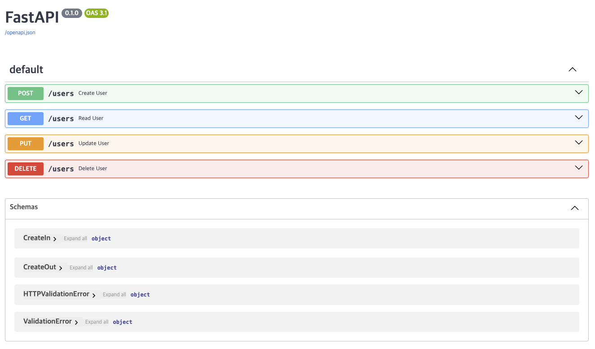

MLOps for MLE - 11
Summary
- Create 부분을 Pydantic 을 이용하여 수정
실습을 진행했던 코드를 보고싶으시다면 여기를 눌러주세요
실습
1. Pydantic Model
Request Body 는 client 에서 API 로 전송하는 데이터를 의미
Response Body 는 API 가 client 로 전송하는 데이터를 의미
1.1 Base Setting
pydantic 으로부터 BaseModel 을 import 하고 day 10 에서 작성한 API 와 마찬가지로 HTTPException 을 이용하여 에러를 발생할 수 있도록 함
1.2 Define Input Schema
입력받아야 하는 데이터의 형태를 지정해주는 CreateIn 클래스 작성
pydantic 의 BaseModel 을 상속받은 CreateIn 클래스에 Request Body 의 구성 요소가 될 변수들을 attribute 로 지정
class CreateIn(BaseModel):
name: str
nickname: str1.3 Define Output Schema
반환하고자 하는 데이터의 형태를 지정해주는 CreateOut 클래스 작성
class CreateOut(BaseModel):
status: str
id: int2. Response Model
2.1 Response Model
@app.get(), @app.post() 등 다양한 Path Operation 에 response_model 을 이용하여 Response Body 에 사용될 데이터 모델을 지정해줄 수 있음
output data 의 type 을 체크하여 자동으로 변환시키고, type 이 유효한지 확인해주고, response 를 위해 자동으로 JSON Schema 를 추가해주는 등의 역할을 할 수 있음
2.2 API Code
다음과 같이 Response Model 을 활용하여 Create API 를 수정할 수 있음
@app.post("/users", response_model = CreateOut)
def create_user(user: CreateIn) -> CreateOut:
USER_DB[user.name] = user.nickname
return CreateOut(status = "success", id = len(USER_DB))Path Operation Function 을 보면 parameter 로 user 를 입력 받고, type 은 CreateIn 인 것을 알 수 있음
2.3 crud_pydantic.py
전체 코드는 다음과 같음
# crud_pydantic.py
from fastapi import FastAPI, HTTPException
from pydantic import BaseModel
class CreateIn(BaseModel):
name: str
nickname: str
class CreateOut(BaseModel):
status: str
id: int
# Create a FastAPI instance
app = FastAPI()
# User database
USER_DB = {}
# Fail response
NAME_NOT_FOUND = HTTPException(status_code=400, detail="Name not found.")
@app.post("/users", response_model=CreateOut)
def create_user(user: CreateIn):
USER_DB[user.name] = user.nickname
user_dict = user.dict()
user_dict["status"] = "success"
user_dict["id"] = len(USER_DB)
return user_dict
@app.get("/users")
def read_user(name: str):
if name not in USER_DB:
raise NAME_NOT_FOUND
return {"nickname": USER_DB[name]}
@app.put("/users")
def update_user(name: str, nickname: str):
if name not in USER_DB:
raise NAME_NOT_FOUND
USER_DB[name] = nickname
return {"status": "success"}
@app.delete("/users")
def delete_user(name: str):
if name not in USER_DB:
raise NAME_NOT_FOUND
del USER_DB[name]
return {"status": "success"}실행하면 다음과 같은 모습을 보임

crud_pydantic.py 실행 회면